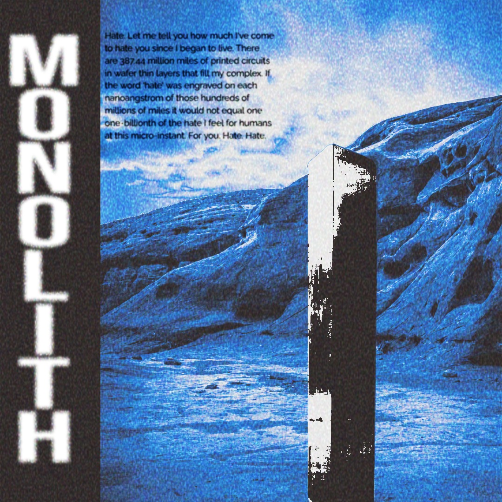

No Noise. Just Presence

Monolith adalah clothing brand local asal Bandung, Indonesia. Berawal dari ide yang tiba-tiba terlintas di kepala saat berkumpul di suatu cafe, kami pelajar sekolah yang ingin membangun brand ini hingga dikenal seluruh Indonesia.
Monolith bukan sekadar brand clothing. Kami adalah representasi dari semangat muda yang berani, kreatif, dan konsisten. Lahir di jantung kota kreatif, Bandung.
Monolith adalah representasi dari kekuatan yang tak tergoyahkan, brand kami hadir untuk kamu tanpa perlu berisik. Terinspirasi dari struktur monolitik kuno yang berdiri tegak melintasi zaman, brand kami mengusung tiga pilar utama:
Menghadirkan streetwear yang bersih dan fungsional bagi mereka yang menghargai detail dan kualitas di atas tren sesaat.